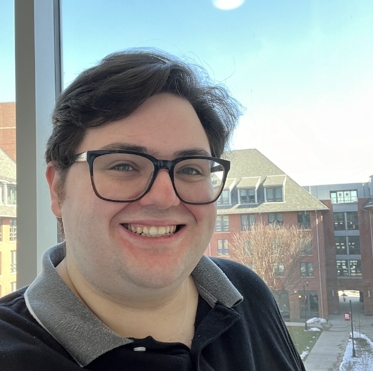

Expected 2027
Ph.D , Political Science
Rutgers University · Major field: American Politics · Minor field: Statistical Methodology
About

Political Science
Ph.D Candidate · Rutgers University
George Quinn is a Ph.D candidate specializing in American politics and statistical methodology.
His research examines political behavior, public opinion, representation, and campaign communication. His dissertation, Negativity Bias Revisited: Changes in the Effects of Campaign Appeals over Time , investigates how positive, negative, and contrast messages shape candidate evaluations across changing campaign environments.
George's wider research connects survey experiments, open-ended text, electoral returns, demographic data, and computational methods. His collaborative work addresses candidate age, Latino voting, racial attitudes and vote choice, data-center politics, and the use of generative AI in survey research.
He is a Graduate Teaching Assistant in the Rutgers Department of Political Science and has serves as Lead Graduate Research Assistant for the Young Elected Leaders Project at the Eagleton Institute of Politics. Launched in 2002 this project works in collaboration with faculty and undergraduate researchers to track age dynamics nationwide at the state legislative and congressional levels.
Education
Expected 2027
Rutgers University · Major field: American Politics · Minor field: Statistical Methodology
2024
Rutgers University
2022
Stockton University · Minor in Holocaust & Genocide Studies
Service
George's research on elected offical's ages has been highlighted in the media. In addtion he served on the 2026 AAPOR Conference Program Committee, with a focus on AI, data science, machine learning, large language models, and natural-language processing. He previously co-chaired the AAPOR–ASA Journal Scholars Exchange and the Rutgers AI Collaborative.
He is affiliated with the American Political Science Association, the American Association for Public Opinion Research, the Midwest Political Science Association, the Southern Political Science Association, the American Statistical Association, and Pi Sigma Alpha.